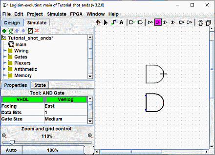
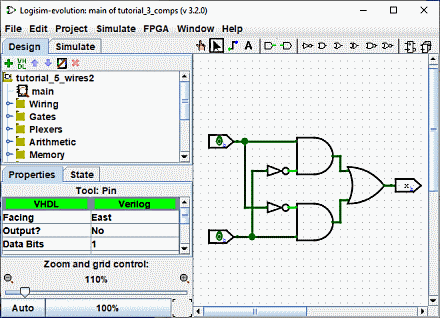
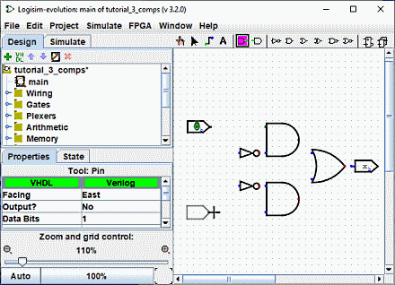

下一节： 第 2 步：添加导线
第 1 步：添加门电路
回想一下，我们正在尝试在 Logisim 中构建以下电路。

建议先插入门电路作为骨架，再用导线连接它们。首先添加两个与门。单击工具栏中的 “AND” 工具（，倒数第二个工具），然后在编辑区域中单击第一个与门的放置位置。请在左侧留出足够空间。接着再次单击与门工具，在其下方放置第二个与门。

注意与门左侧有五个点。这些是可以连接导线的位置。对于这个异或电路，只会用到其中两个；但在其他电路中，可能需要让多根导线连接到同一个与门。输入数量可以在“输入数量”属性中修改。
现在添加其他门。首先点击“或门”工具（），然后点击目标位置。接着使用“非门”工具（）将两个非门放入画布。

这里在非门和与门之间留了一点空间；不过，如果愿意，也可以将它们紧挨着放置，从而省去之后用导线连接它们的麻烦。
现在要在图中添加两个输入 x 和 y。选择“输入”工具（ ），并放置引脚。还应使用“输出”工具（
），并放置引脚。还应使用“输出”工具（ ）在或门输出旁放置一个输出引脚。（同样，这里在或门和输出引脚之间留了一点空间，但也可以将它们紧挨着放置。）
）在或门输出旁放置一个输出引脚。（同样，这里在或门和输出引脚之间留了一点空间，但也可以将它们紧挨着放置。）

如果不满意某个组件的放置位置，可以使用“编辑”工具（ ）选中并拖动到目标位置。也可以选择 | 编辑 | → | 删除 |，或按 Delete 键或 Ctrl-X 组合键来删除它。
）选中并拖动到目标位置。也可以选择 | 编辑 | → | 删除 |，或按 Delete 键或 Ctrl-X 组合键来删除它。
放置电路组件时，会注意到组件一旦放置完毕，Logisim 就会切换到“编辑”工具（ ），以便移动刚放置的组件，或通过创建导线将它连接到其他组件。如果想添加刚放置组件的副本，可以按Ctrl-D复制所选内容。（有些计算机使用其他键作为菜单快捷键，例如 Macintosh 上的 Command 键，此时需要将该键与 D 键同时按下。）
），以便移动刚放置的组件，或通过创建导线将它连接到其他组件。如果想添加刚放置组件的副本，可以按Ctrl-D复制所选内容。（有些计算机使用其他键作为菜单快捷键，例如 Macintosh 上的 Command 键，此时需要将该键与 D 键同时按下。）
下一节： 第 2 步：添加导线